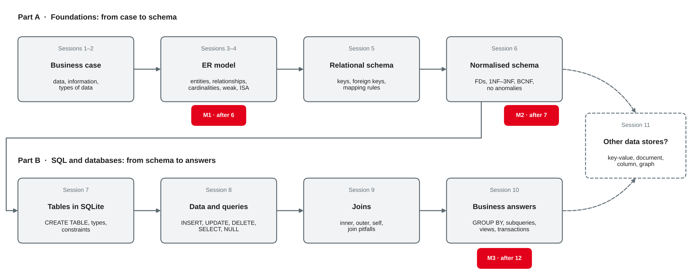

Data Management
Parts A–B in review · checklists for schema and SQL · common mistakes · team consultations · feedback round
DHBW · Digital Business Management (Business IT) · Semester 2
Your preparation: your team's database or scripts, your queries for milestone 3 and a list of open questions. Which question would you ask first?
From business case to business answers

Own illustration based on sessions 1–11 of this course; milestones from session 4.
| Session | Core idea | Typical mistake |
|---|---|---|
| 3 ER model | Entity types, relationships, cardinality and participation | Cardinality read from one side only |
| 4 ER model II | Weak entity types, M:N with attributes, recursive, specialisation | Price or date stored on the wrong entity type (history) |
| 5 Relational model | Keys, foreign keys, integrity; mapping rules | Foreign key on the "1" side of a 1:N relationship |
| 6 Normalisation | Functional dependencies; 1NF, 2NF, 3NF, BCNF | Lists in one cell; a fact about a non-key attribute |
Own summary of sessions 3–6, based on Chen (1976), Staud (2005) and Elmasri and Navathe (2016, Chapters 3, 4, 5, 9 and 14).
| Session | Core idea | Typical mistake |
|---|---|---|
| 7 SQL I | CREATE TABLE with types and constraints | Foreign keys not switched on: PRAGMA foreign_keys |
| 8 SQL II | INSERT, UPDATE, DELETE; SELECT with WHERE | = NULL instead of IS NULL; UPDATE without WHERE |
| 9 SQL III | Inner, outer and self joins | Filter on the optional table in WHERE |
| 10 SQL IV | GROUP BY, HAVING, subqueries, views, ACID | Sum after joining two 1:N paths: doubled revenue |
| 11 NoSQL | Data store by access pattern; CAP and BASE | CAP's C confused with ACID's C |
One question runs through Part B: what does one row of the result mean?
Own summary of sessions 7–11, based on Elmasri and Navathe (2016, Chapters 6, 7 and 24), Sadalage and Fowler (2013) and SQLite (n.d.-d).
Answer briefly in pairs — without your notes.
price_charged in repair_line redundant, since spare_part has a list price?WHERE description = NULL returns no rows. Why, and what is the fix?LEFT JOIN suddenly behaves like an inner join. What is the usual cause?WHERE count(*) > 1 fails. What is the difference between WHERE and HAVING?Milestone 3, checklists and consultations
Team workshop
Work on your database and queries. Use the checklists on the next slides first — most problems show up there.
Consultation
A short talk at your table. Come with one concrete question and the query or table it is about.
Peer review
Swap schema and queries with another team. Review with the checklists; give two strengths and two suggestions.
| Part | What it shows |
|---|---|
| Schema script | your normalised schema in SQLite: types, keys, foreign keys, NOT NULL, CHECK, referential actions |
| Test data | enough rows to test the queries — including edge cases: NULLs, rows without partners |
| Business questions | each question in words, the SQL query and the result |
| SQL features | joins (incl. an outer join), aggregation with GROUP BY / HAVING, a subquery, a view, a transaction |
The exact deliverables, deadline and submission format are in the project brief.
Milestones from session 4; SQL features from sessions 7–10.
NOT NULL, UNIQUE, CHECK for the business rules; dates as ISO text (YYYY-MM-DD)PRAGMA foreign_keys = ON in every connection; PRAGMA foreign_key_check returns no rowsOwn summary based on Elmasri and Navathe (2016, Chapters 5, 9 and 14) and SQLite (n.d.-a, n.d.-d).
LEFT JOIN where a row may have no partner; filters on the optional table go into ONSELECT column is grouped or aggregated; count(column) instead of count(*) after an outer joinIS NULL, NOT EXISTS instead of NOT IN, coalesce where "unknown" should count as 0Own summary of sessions 8–10, based on Elmasri and Navathe (2016, Chapter 7) and SQLite (n.d.-b, n.d.-c).
| Mistake | Symptom | Fix |
|---|---|---|
A list in one cell: parts = 'P-101, P-103' | "all jobs with P-103" needs LIKE | own table for the M:N relationship (1NF) |
| Derived values stored: age, number of jobs | values go out of date | calculate in a query or view |
| Current price only | old invoices change | store the price at the time (history) |
Partial key as primary key: room_no alone | room 1 exists only once in all houses | owner key + partial key |
| Name copied into a second table | update anomaly | foreign key only; join for the name |
Dates as '12.01.2027' | wrong order, no date functions | ISO format '2027-01-12' + CHECK |
Based on Staud (2005), Elmasri and Navathe (2016, Chapters 9 and 14) and the course exercises of sessions 4–7.
| Query | Observed result | Why — and the fix |
|---|---|---|
mechanics with count(*) after LEFT JOIN job_mechanic | Tim Krause: 1 job | counts the NULL row → count(jm.job_no) gives 0 |
customers WHERE customer_no NOT IN (SELECT customer_no FROM bike) | 0 rows | stock bikes put NULL into the list → NOT EXISTS |
bikes LEFT JOIN repair_job … WHERE job_date >= '2027-04-01' | 2 rows, not 15 | WHERE removes the NULL rows → condition into ON |
sum(quantity * price_charged) after joining job_mechanic | 1095.8 instead of 941.4 | 2 mechanics double the lines → aggregate first |
SELECT brand, model, count(*) … GROUP BY brand | Cube · Kathmandu · 4 | model is a bare column → group or remove it |
Own examples on the bike shop data; based on SQLite (n.d.-b, n.d.-c) and Elmasri and Navathe (2016, Chapter 7).
Swap your schema script and three queries with another team.
Fresh database with the three scripts. Predict the number of rows first.
| ER construct | Relation |
|---|---|
| Entity type | relation; key attribute → primary key |
| 1:N relationship | foreign key on the N side |
| M:N relationship | own relation; primary key = both foreign keys (+ attributes) |
| Weak entity type | owner key + partial key as primary key |
| Specialisation | one relation per subclass with the superclass key (or one table with a type column) |
Based on Elmasri and Navathe (2016, Chapters 9 and 14).
Keep
What helps you learn and should stay?
Change
What should be different in Parts C and D?
Pace
Input, hands-on, worksheets: too fast, right, too slow?
Project
What would help your team most until milestone 4?
Preparation: finish worksheet 12 and milestone 3 as described in the project brief; bring your peer review feedback and one example of "bad data" you have met in your company.